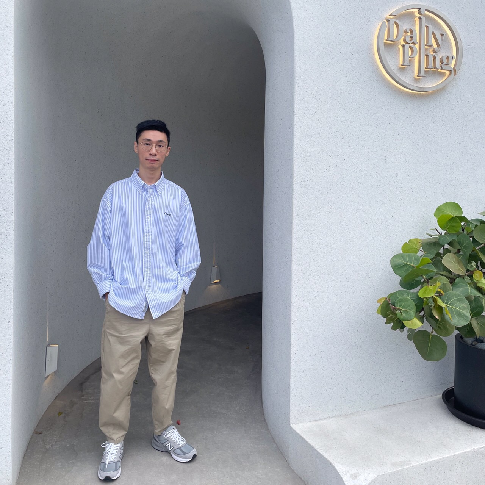

在大三的時候有去美國讀書一年,讀的系是Computer Science。
在美國的一年我努力的培養英語溝通與表達的能力。 上一份工作為記憶體產業的業務人員，後來因為疫情疫情及職涯考量, 決定一邊進修一邊準備國考。目前為中華大學資訊管理碩二的學生。 有接學校C語言的助教，有時也會幫指導教授去磐石高中上基礎的C語言。 寫過的語言有C/C++/Python，使用過VS code寫C與Python 正在自學用是Visual Studio寫C#，具有撰寫程式的基本觀念與邏輯。 目前正在累積撰寫後端程式的經驗，並且同時累計作品集。
多益成績:820分
TOEIC多益考試讓同學檢測自己的英文程度、通過大學英文畢業門檻，多益考試更讓企業使用於員工的招募、評鑑與培訓，讓企業快速的篩選出所需要的人才，省略時間與資源，覓得具有國際溝通能力的人才。
多益ETS官方數據報告統計，台灣大學生多益考試成績平均僅為514分，但企業要求新進人員的平均分數是582分，甚至在招募更高階的職務時，要求的多益分數更高。
托福成績:65級分
TOEFL 是 Test of English as a Foreign Language 的縮寫，托福測驗是由美國教育測驗服務社 Educational Testing Service (簡稱 ETS) 在世界各地所舉辦的眾多英文能力考試之一，主要是測試母語非英語者之英語能力，是想到美國留學的同學，不可或缺的入學申請成績。